Parallel Bilateral Filtering using OpenCL
Parallel Bilateral Filtering using OpenCL
Ruitao (Toby) Du, Xide Xia
CS205: Computing Foundations for Computational Science
Instructor: Thouis "Ray" Jones
OpenCL without buffer
Compute a batch of points at the same time with OpenCL to speed up the processing
OpenCL with buffer
Further accelerate the calculation by taking advantage of local buffers
OpenCL with buffer and index trick
Use an index trick to reuse part of the buffer of the previous iterations
Project Overview
Smoothing is one of the most commonly used image processing methods. To smooth an image or a data set is to create an approximating function that attempts to capture important patterns in the data while leaving the noise points - the data points of a signal are modified so individual points are reduced and points that are lower than the adjacent points are increased leading to a smoother signal. There are many kinds of image smoothing algorithms such as gaussian smoothing, laplace smoothing, and bilateral smoothing. A bilateral filter is a nonlinear, edge-preserving and noise-reducing smoothing filter for images. However, for high resolution images, it would take a long time to run. It is important that image is processed and analyzed using image processing algorithms at minimum cost. By parallelizing of the algorithm, we can optimize the speed at which the image is processed. This project explores the parallel implementation of. The main objective of this project is to design som bilateral filtering. This parallel algorithm will be able to work with different number of threads and to take all the benefits of the processors.
In this project, our goal is to develop an efficient algorithm for bilateral filtering. In traditional image processings, image filtering are applied to exert various effects on photos. The center of a selected filter matrix has to be multiplied with the current pixel, the other elements of the filter matrix with corresponding neighbor pixels. In other words, only one pixel’s value is going to be changed at one time. In our project, we plan to improve efficiency via parallel computing. For example, in the smoothing processing, a predefined filter A is applied to the input image. Traditionally, the center of A is multiplied with the current pixel and the adjacent elements of A are multiplied with the adjacent pixels of the image respectively. Then we replace the current pixel’s value with the average of the sum of the multiplication we just calculated before moving to the next pixel. With the help of parallel programming in python and cython, we can try multithreading and spark to boost the performance by updating pixels block by block.
Bilateral Filtering
Bilateral Filtering is one of the most fundamental operations of image processing. It smooths images while preserving edges, by means of a nonlinear combination of nearby image values. It is a non-iterative, local, and simple method that combines gray levels or colors based on both their geometric closeness and their photometric similarity, and prefers near values to distant values in both domain and range. The basic method behind bilateral filtering is to do update the values of pixels based on their neighborhood. It takes a weighted sum of the pixels in a neighborhood. The values of weights depend on the spatial distance between current pixel to the neighbor as well as on the intensity of the pixels. Because of the way the weights are calculated, the bilateral filtering is able to preserve edges while still averaging and getting rid of the noise.
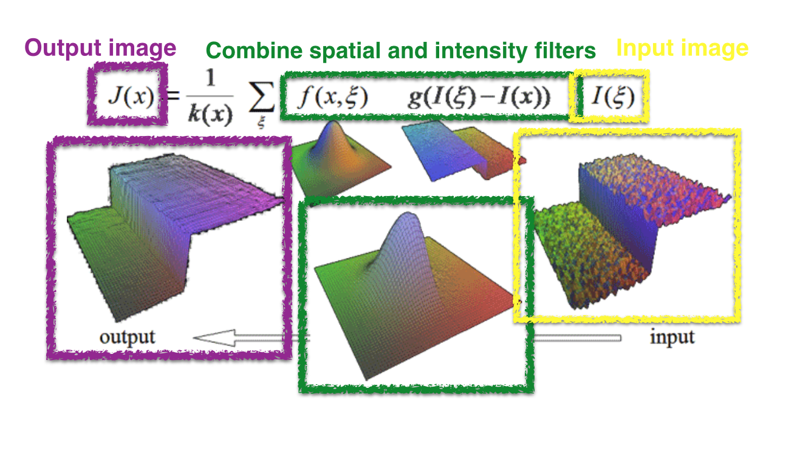 Consider a shift-invariant low-pass domain filter applied to an image: The bold font for f and h emphasizes the fact that both input and output images may be multi-band. In order to preserve the DC component, it must be:
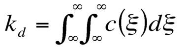
Range filtering is similarly defined:
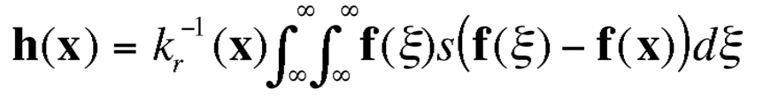
In this case, the kernel measures the photometric similarity between pixels. The normalization constant in this case is:
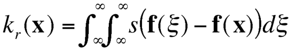
Bilateral filtering method combines domain and range filtering, thereby enforcing both geometric and photometric locality. Combined filtering can be described as follows:
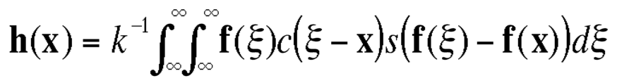
with the normalization:
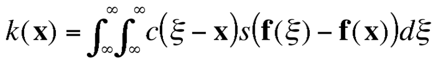
Bilateral filtering method replaces the pixel value at x with a weighed average of similar and nearby pixel values in x's neighborhood. Pixel values in a small neighborhood are similar to each other. It acts essentially as a standard domain filter- it averages away the small, weakly correlated differences between pixel values caused by noise.
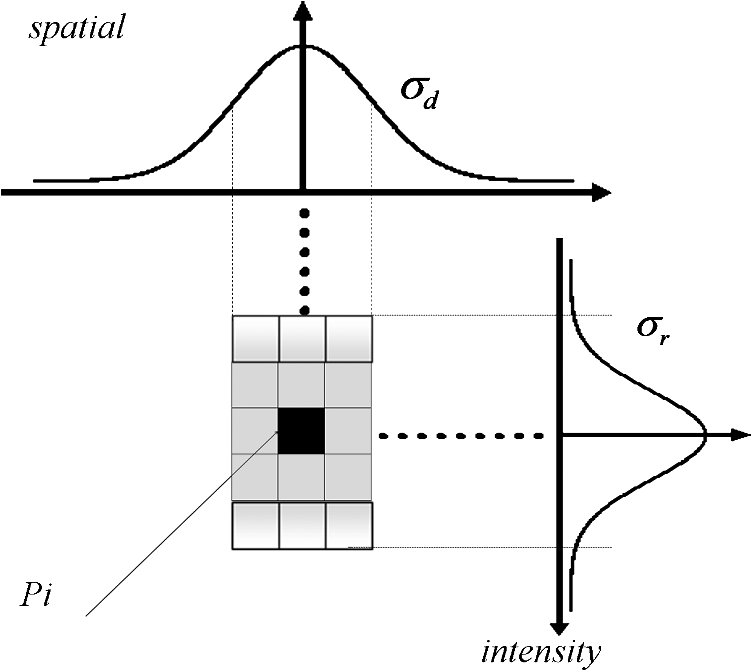
The bold font for f and h emphasizes the fact that both input and output images may be multi-band. In order to preserve the DC component, it must be:
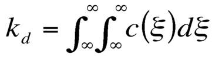
Range filtering is similarly defined:
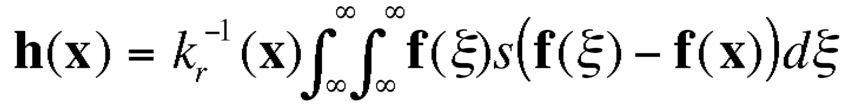
In this case, the kernel measures the photometric similarity between pixels. The normalization constant in this case is:
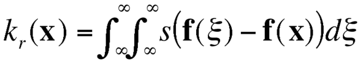
Bilateral filtering method combines domain and range filtering, thereby enforcing both geometric and photometric locality. Combined filtering can be described as follows:
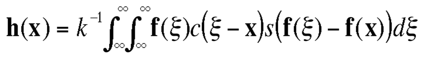
with the normalization:
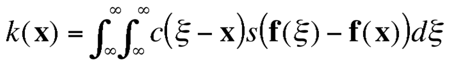
Bilateral filtering method replaces the pixel value at x with a weighed average of similar and nearby pixel values in x's neighborhood. Pixel values in a small neighborhood are similar to each other. It acts essentially as a standard domain filter- it averages away the small, weakly correlated differences between pixel values caused by noise.
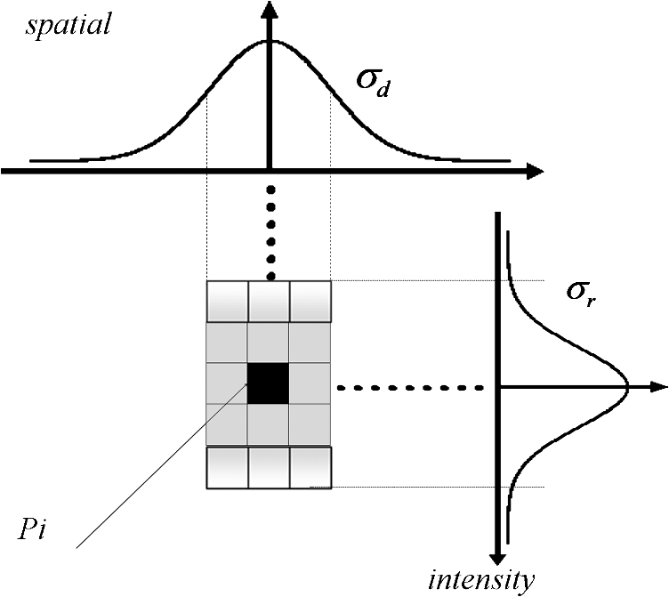

Examples:
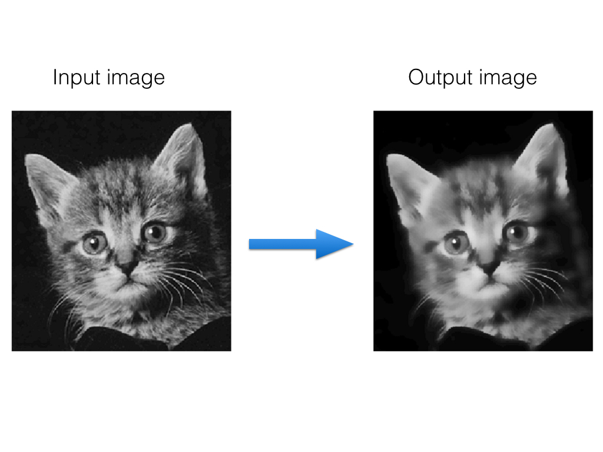Methods
This project explores different parallel implementations of bilateral filtering in OpenCL and compares the performance of them with the serial version in python. Below is four methods we implemented. In these methods, we all precompute the spatial difference first so that we don't need to calculate them multiple times.
1. Serial version with NumPy
Calculate the output pixel by pixel. For each pixel, we need to calculate the pixel difference within a certain neighborhood. To speed up the process, we vectorize the calculation by utilizing NumPy.

2. OpenCL version without buffer
Calculate the output pixels in blockwise parallel. We use OpenCL with different work group size to parallelize the code. Work group sizes are 8×8, 12×12, 16×16, 20×20. Inside the OpenCl code, it directly read from global memory when we access the neighborhood.
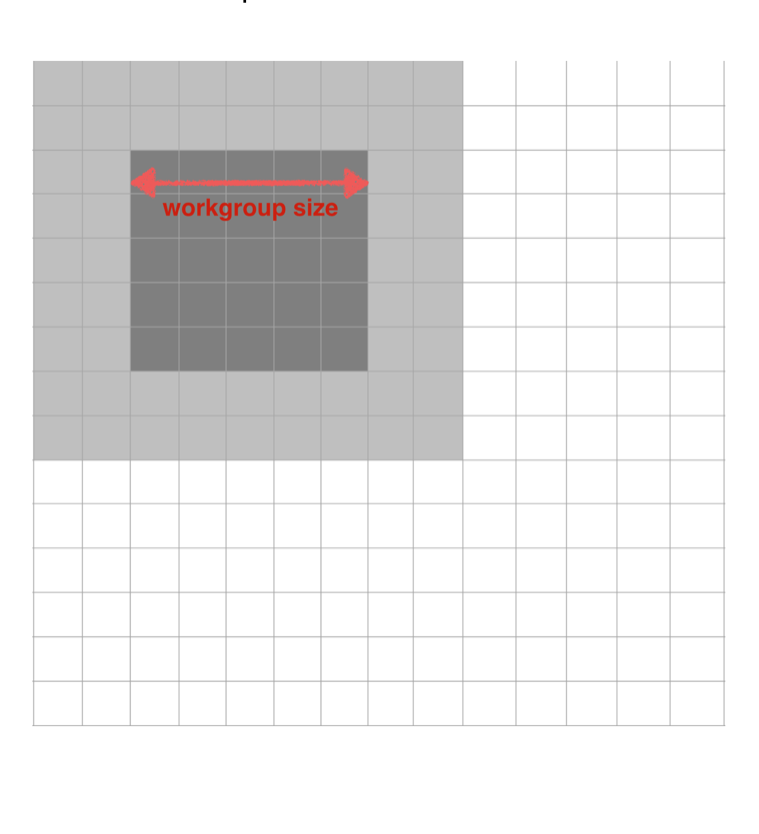
3. OpenCL version with buffer
Calculate the output pixels in blockwise parallel. We use OpenCL with different work group size to parallelize the code. Work group sizes are 8×8, 12×12, 16×16, 20×20. Inside the OpenCL code, first we read in all neighborhood of a work group to the buffer. And then we access the neighborhood by reading from local memory. This way can save time on accessing the global memory.

4. OpenCL version with buffer and index trick
Calculate the output pixels in columnwise parallel. In previous OpenCL methods, we put some pixels to the buffer multiple times. Work group sizes are 16×8, 20×8, 24×8, 28×8, 20×4, 24×4. Instead, we were reusing the buffer by introducing an index trick. Also, to increase the percentage of reused buffer, we set the work group size to be a long thin rectangle.

Machine Used
Apple OpenCL version: OpenCL 1.2
CPU: Intel(R) Core(TM) i7-4770HQ CPU @ 2.20GHz
Maximum clock Frequency: 2200 MHz
Maximum allocable memory size: 4294 MB
Maximum work group size 1024
GPU: Iris Pro Maximum clock Frequency: 1200 MHz
Maximum allocable memory size: 402 MB
Maximum work group size 512 .
Results
Parallel Bilateral Filtering in OpenCL
Outputs
To show the performance of our Bilater Filtering processing, we used several different images to test. Following is the output image result of different size of neighborhood:
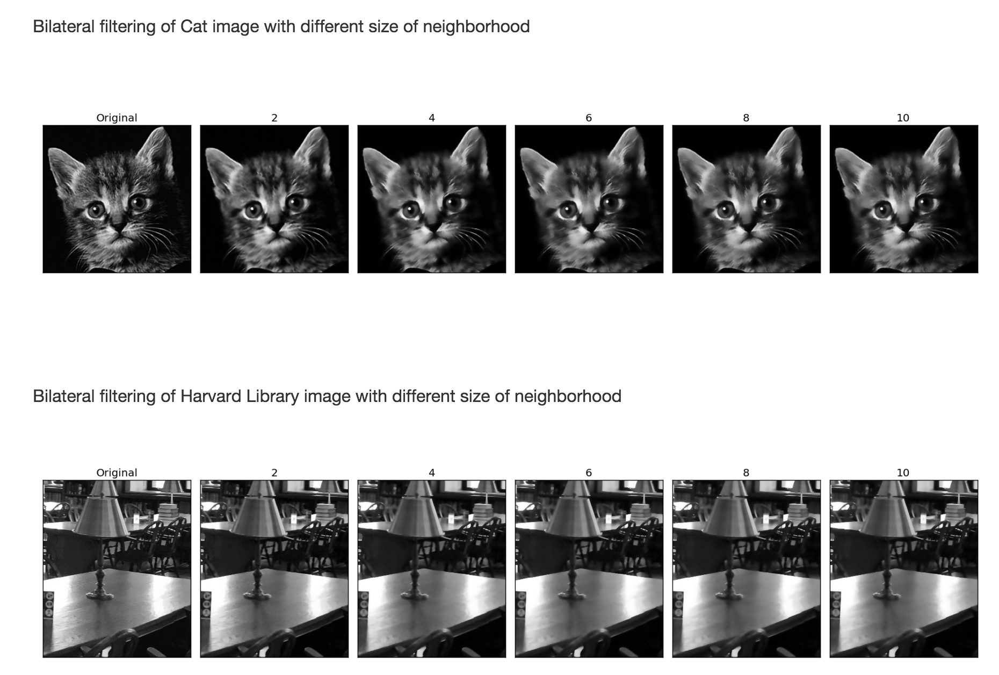
Runtime
Serial vs. Parallel

Workgroup
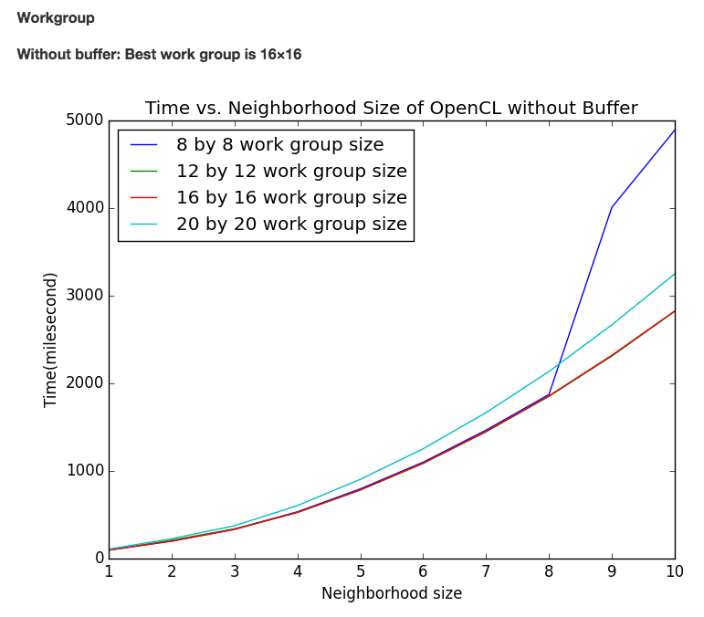 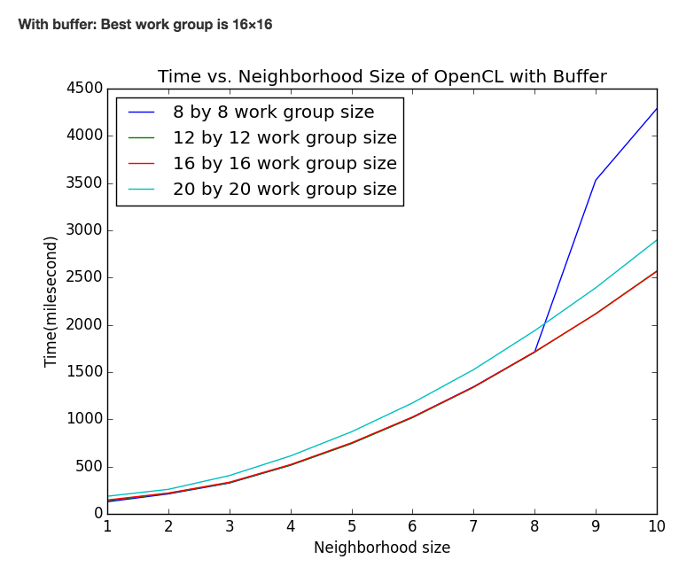 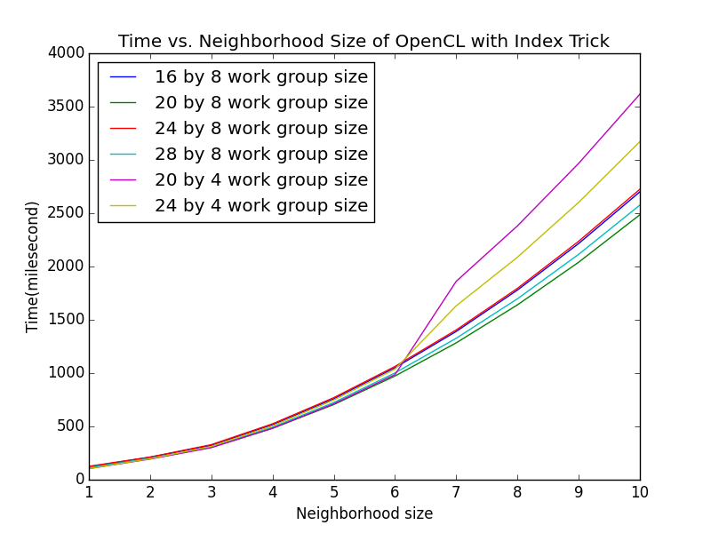

From the results, we see a larger neighborhood requires more runtime. It also shows parallel versions are much faster than the serial version. Within the three OpenCL versions, the result shows that using local buffers will save more runtime than using the global memory. However, when we add an index trick, the processing slows down. That’s because although the index trick helps to reuse part of the buffer of previous iterations, it requires extra time to calculate the index and less total number of threads.
Conclusions
Bilateral Filtering is one of the most fundamental operations of image processing. In a bilateral filter, there is a spatial filter that measures the geometric closeness between the current point and a nearby point. There is another filter called intensity filter that measures the photometric similarity between the pixel value of the current point and that of a nearby point. Bilateral filtering combines the spatial and intensity filters, thereby enforcing both geometric and photometric locality.
In our project, we explored different parallel implementations of bilateral filtering in openCL and compared their performances with the serial version in python: First, we tried serial version with NumPy. Second, we compute a batch of points at the same time with OpenCL to speed up the processing. Third, with OpenCL, we further accelerate the calculation by taking advantage of local buffers to save time of accessing the global memory. Since for some points, we are accessing their pixel value for multiple times. We finally use an index trick to reuse part of the buffer of the previous iterations.
Resource
Watch ouor screencast? Youtube
Get our codes? Github
Reference
1. Paris, Sylvain, et al. "A gentle introduction to bilateral filtering and its applications." ACM SIGGRAPH 2007 courses. ACM, 2007.
2. Paris, Sylvain, et al. Bilateral filtering: Theory and applications. Now Publishers Inc, 2009.
3. OpenCL, Khronos. "The open standard for parallel programming of heterogeneous systems." Website. URL http://www. khronos. org/opencl. Symposium on Microarchitecture, MICRO.
Acknowledgements
We thank Ray and all CS205 TFs for providing the wonderful course and all helpful instructions.
This work was done as part of the CS205 course at Harvard. You can find more information and other cool projects here: CS205
Contact information
Toby Du: ruitaodu at g.harvard.edu
Xide Xia: xidexia at g.harvard.edu